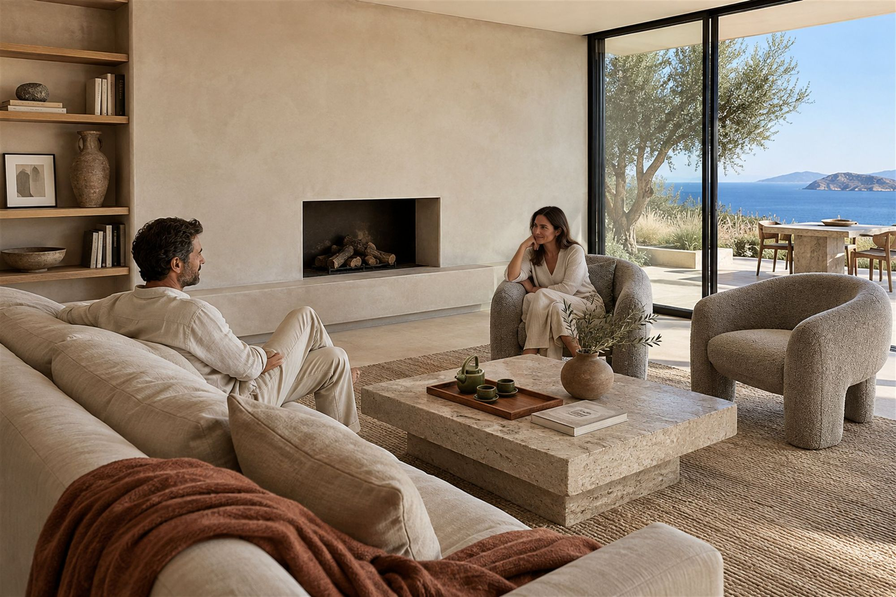
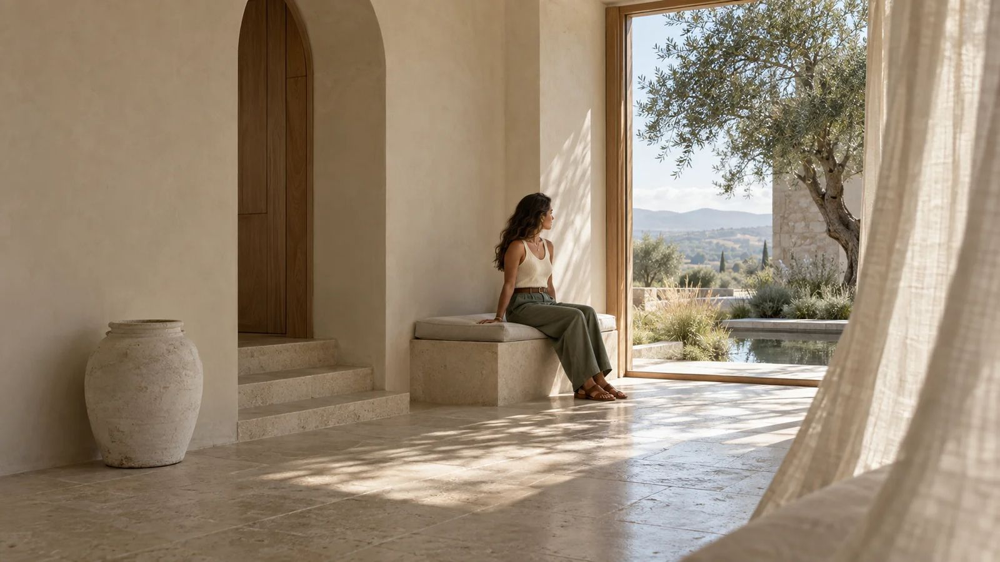
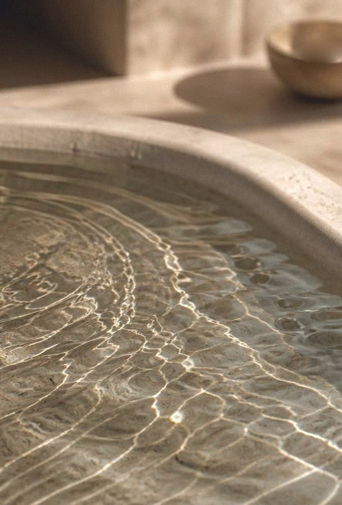
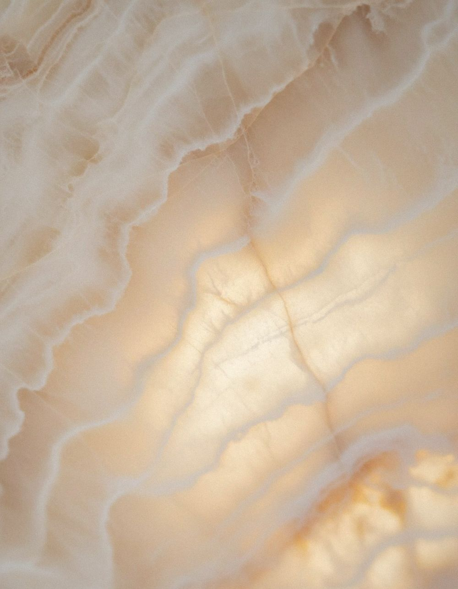
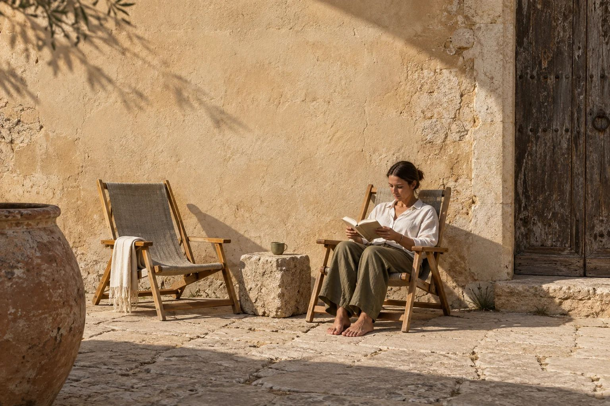

Tu espacioya te estáafectando.
La luz, el sonido, el aire, la temperatura, los materiales y la distribución influyen en cómo te sientes, descansas y trabajas. Estudiamos esa relación y diseñamos a partir de ella.
observamos
método continuo
espacio

Luz
Lectura ilustrativa. Dale play al recorrido, toca un punto o cambia la hora para ver qué nos dice el espacio.
Un espacio no es un fondo pasivo.
No empezamos preguntando cómo debe verse un espacio, sino cómo se vive.
Liven Interiors® es una práctica de diseño e investigación aplicada. Explora cómo el entorno participa en nuestra experiencia diaria: la luz, el sonido, la temperatura, los materiales, la distribución, la privacidad, la naturaleza y la posibilidad de controlar el ambiente intervienen en cómo descansamos, nos concentramos, convivimos y nos sentimos.
Por eso primero entendemos qué necesita la persona, qué señales ofrece el entorno y qué condiciones pueden mejorar. Después asesoramos, diseñamos o renovamos.
“Porque los espacios también nos habitan.”Aime Nava, fundadora de Liven Interiors®

¿Cómo te está tratando tu espacio?
Antes de seguir, tómate un minuto. Son siete preguntas sobre el lugar donde pasas más tiempo: tu casa, tu recámara o tu lugar de trabajo.
- Verás qué dimensiones están en equilibrio y cuáles piden atención.
- Te damos ideas sencillas para empezar hoy.
- Puedes enviarnos tu resultado para una evaluación real.
La relación entre un espacio y quien lo habita.
Lo que percibes, lo que sientes, cómo actúas y lo que recuerdas. Cada lugar desencadena esta secuencia, muchas veces sin que lo notes.
Espacio
Luz, sonido, aire, materiales y distribución.
Percepción
Lo que tus sentidos captan, aunque no lo notes.
Cerebro
Interpreta señales de calma, alerta o seguridad.
Emoción
Cómo te sientes estando ahí.
Comportamiento
Cómo descansas, trabajas, te mueves y convives.
Memoria
Lo que el lugar deja en ti con la repetición.
Toca un paso para detenerte en él.
Liven no busca imponer una emoción ni promete que un espacio resuelva por sí solo problemas de salud. Su propósito es crear entornos coherentes con las necesidades humanas y observar cómo evoluciona la experiencia después de intervenir.
Habitamos los espacios durante horas, días y años. Un dormitorio, una oficina, un hotel o un espacio de cuidado pueden facilitar la calma y la recuperación, o mantener al cuerpo en alerta por el ruido, el deslumbramiento, la temperatura, la falta de privacidad o una distribución poco intuitiva.
El espacio como terapeuta invisible
Usamos esta expresión como metáfora: el entorno acompaña en silencio la vida cotidiana. Puede ofrecer refugio, orientación, descanso, conexión con la naturaleza y sensación de control. No sustituye a la medicina ni a la psicología: lleva la conversación sobre bienestar al lugar donde la vida sucede.
La repetición importa
Un espacio no se agota en la primera impresión: lo vivimos una y otra vez. Las rutinas y exposiciones ambientales pueden reforzar hábitos, asociaciones y maneras de responder al entorno.
Todo espacio deja huella.

Diez dimensiones, leídas como un sistema.
Ninguna actúa sola. La luz cambia la temperatura, el ruido cambia la sensación de privacidad, el orden cambia la carga sensorial.

El ambiente
La experiencia
Cuando conviene, lo respaldamos con mediciones de luz, sonido, aire y temperatura. Nunca es un diagnóstico médico.
Cómo trabajamos.
Ocho ideas que guían cada proyecto, de una recámara a un hotel.
Diseñar para la experiencia
La estética al servicio de cómo se vive.
Escuchar antes de intervenir
Primero la persona y sus rutinas.
Observar el entorno completo
Luz, sonido, aire y materiales como sistema.
Trabajar con el cuerpo y los sentidos
Habitamos con todo el cuerpo.
Diseñar sin determinismos
Cada persona percibe distinto.
Comprobar para aprender
Comparamos el antes y el después.
Integrar naturaleza y ritmos humanos
Luz natural, ciclos del día y vistas.
Ajustar con evidencia
Separamos la evidencia de la exploración.
Un ciclo continuo, en ocho pasos.
Cada proyecto recorre los ocho pasos, antes, durante y después de intervenir, y deja aprendizaje para el siguiente.
Empieza por lo que necesitas hoy.
Asesoría, diseño y renovación de espacios según lo que cada persona necesita. Elige tu punto de partida.
De la escala íntima a la pública.
Trabajamos en casa y en lugares donde la experiencia humana es parte central del servicio.
Para quienes quieren que su espacio trabaje a su favor.
Personas y familias
Quienes quieren comprender su casa antes de remodelar, mudarse o invertir en mobiliario, o mejorar su descanso, concentración, privacidad y confort.
Hospitalidad y desarrollo
Hoteles boutique, resorts, spas y retiros. Desarrolladores residenciales y de vivienda multifamiliar que integran el bienestar como valor de diseño.
Organizaciones y cuidado
Oficinas interesadas en el foco, la recuperación y la colaboración. Espacios de salud, cuidado, educación y atención donde importan la orientación, el confort y la carga sensorial.
Arquitectos e interioristas
Equipos de proyecto que requieren una capa especializada de Spatial Wellbeing, como diagnóstico previo o dentro del proceso de diseño.
Cuando el proyecto pide construir, la metodología continúa.
Liven opera de forma independiente como laboratorio de evaluación, consultoría y diseño. Cuando un proyecto requiere arquitectura, construcción, sistemas o eficiencia energética, se conecta con Biohausen®.
Liven
Estudia la experiencia y define las condiciones de bienestar.
Biohausen®
Lleva esas condiciones a la arquitectura, la construcción y los sistemas del proyecto.
The Living Space
El marco que conecta ambas prácticas: los entornos como parte de sistemas humanos y vivos, y el diseño como una oportunidad para crear mejores condiciones para las personas y para el lugar.

“No diseñamos las memorias; diseñamos las condiciones en las que nuevas memorias pueden suceder.”
El futuro del diseño espacial no está solo en lo que vemos, sino en lo que percibimos.
Hablemos de tu espacio.
Cuéntanos qué espacio quieres mejorar y qué te gustaría sentir en él. Te respondemos para agendar una primera conversación.
Asesoría presencial y a distancia (E-design).